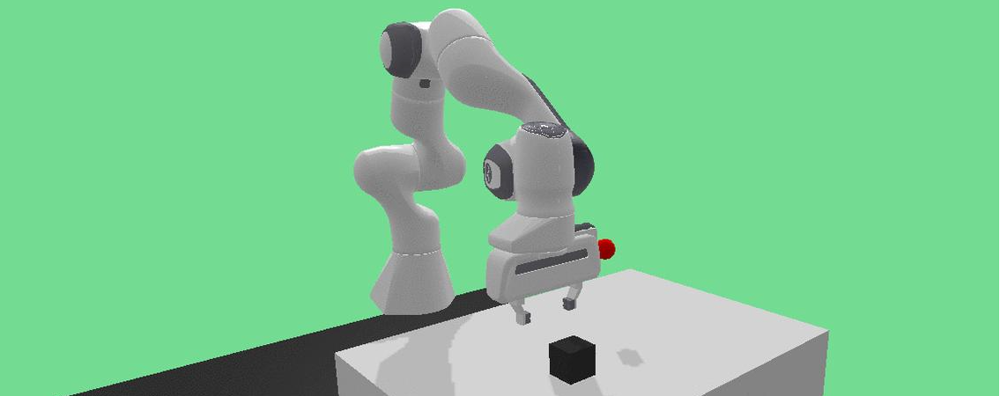
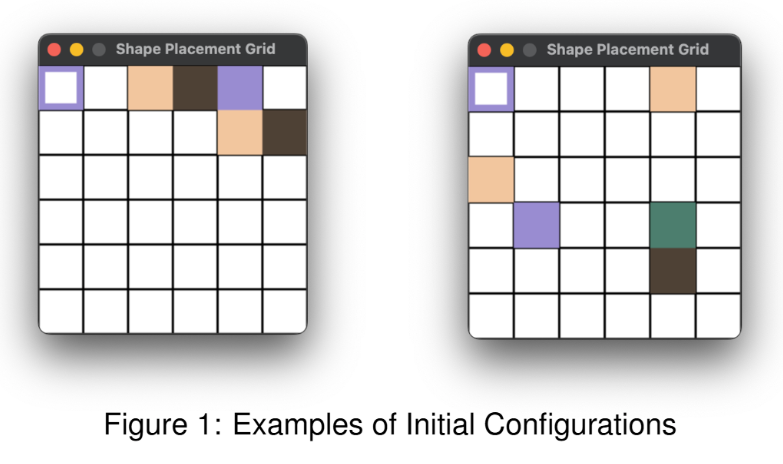
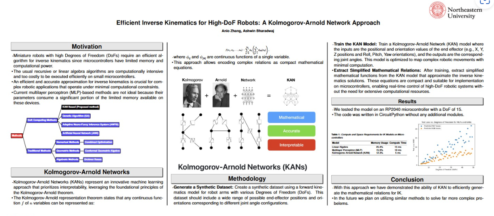
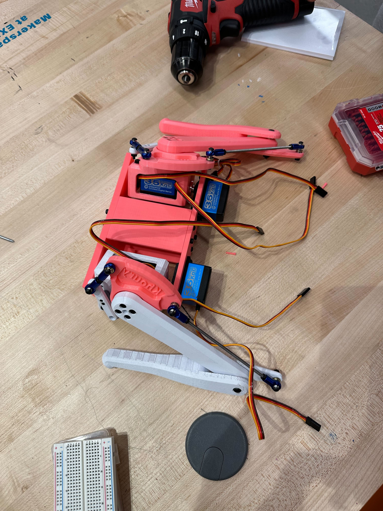

Projects
-

VLM based robot manipulator
This is my master project. In this project I explore the utility of VLMs in generating novel policies for robot arms to grasp and manipulate objects.
-

Shapeshifting Coloring Problem
Developed for Northeastern University's Foundations of AI course and published at EAAI-2025, this interactive assignment presents a variant of the tiling problem with multiple constraints. Students explore diverse approaches to solve this constraint satisfaction problem (CSP), aiming for optimal solutions.
-

KAN-Based Inverse Kinematics
This research leverages Kolmogorov-Arnold Networks (KANs) to improve inverse kinematics (IK) computation on resource-constrained microcontrollers. KANs generate compact mathematical formulations that map end-effector positions (quaternions) to joint angles for robotic arms with up to **20 degrees of freedom (DoFs)**. Our results demonstrate KANs' superiority over MLPs and genetic algorithms, offering computational efficiency and better generalization for real-time IK applications.
-

WaltZ
WaltZ, a 6-DoF bipedal robot, is a flagship initiative of the Khoury Robotics Club. Powered by an RP2040 microcontroller and a 9-axis IMU, it is designed for affordability and ease of fabrication. This ongoing project aims to serve as an educational platform, demonstrating gait dynamics, balance control, and embedded system principles in robotics curricula.